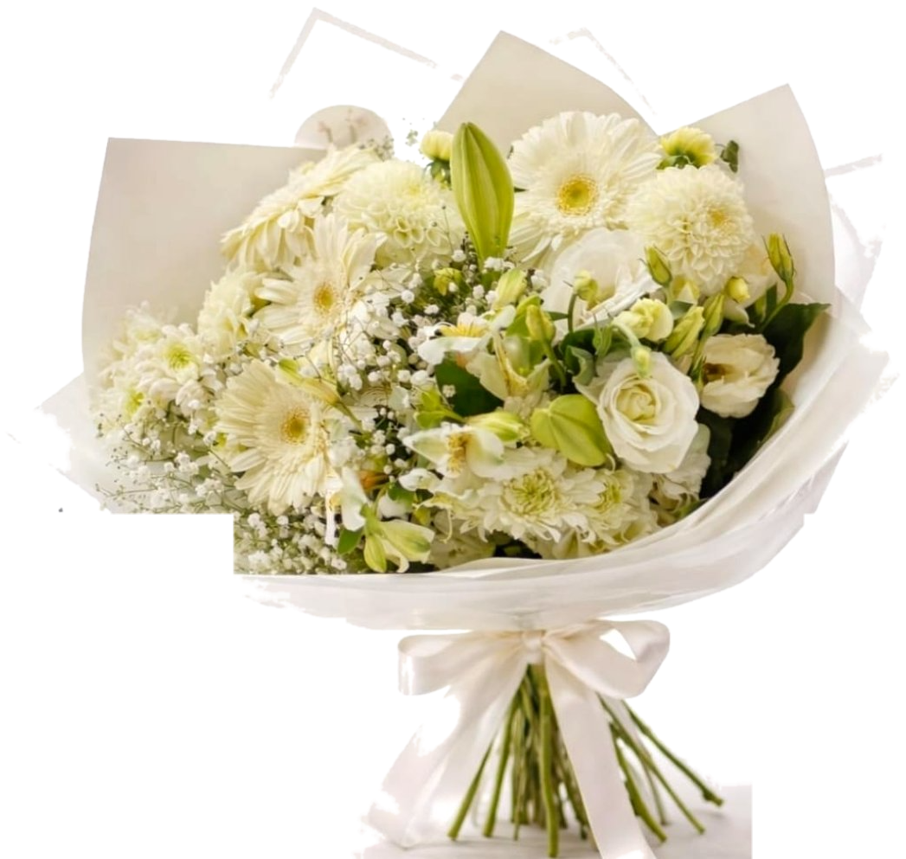

אביבית · בוטיק פרחים · אשדוד
לא עוד זר.
סיפור.
אצלי לא בוחרים מקטלוג ולא מקבלים את אותו זר משעמם של כל יום הולדת.
כל זר נולד משיחה אישית איתי, מהקשבה למי הוא הולך, לאיזה רגע, ולמה.
★ ★ ★ ★ ★
זרים שמרגישים אותם. כל זר נוצר בידי, אביבית, היוצרת.

✿ סיפור אחד · זר אחד
עבודת יד, אחת אחת ✿
✦ להגיד "אני אוהבת אותך" בלי מילים ● להעניק חיוך בבוקר רגיל ● להתנצל בלי לפתוח את הפה ● לחבק מרחוק ● להגיד "אני גאה בך" ● לחגוג רגע קטן ● להגיד תודה מהלב ●
✦ להגיד "אני אוהבת אותך" בלי מילים ● להעניק חיוך בבוקר רגיל ● להתנצל בלי לפתוח את הפה ● לחבק מרחוק ● להגיד "אני גאה בך" ● לחגוג רגע קטן ● להגיד תודה מהלב ●
הסיפור שלי
אבא שלי, אהרון, היה גנן והייתה לו חנות פרחים, "פרחי אביבית".
היום החלום הזה ממשיך אצלי, בבוטיק משלי באשדוד.
לאיזה רגע?
לכל רגע, הזר שלו.
לא רק יום הולדת. לא רק "סליחה". יש כל כך הרבה רגעים בחיים שמגיע להם זר.
{{ m.tag }}
{{ m.title }}
{{ m.sub }}
הרגע שלך לא ברשימה? זה בסדר.
ספרי לי עליו ←בואי נתחיל
בואי נדבר על הזר שלך.
שיחה קצרה איתי, אביבית. בלי התחייבות, בלי קטלוג. רק להכיר אותך, להבין את הרגע, וליצור יחד משהו שהוא רק שלכם.
תגובה תוך 24 שעות, בדרך כלל הרבה יותר מהר 💐